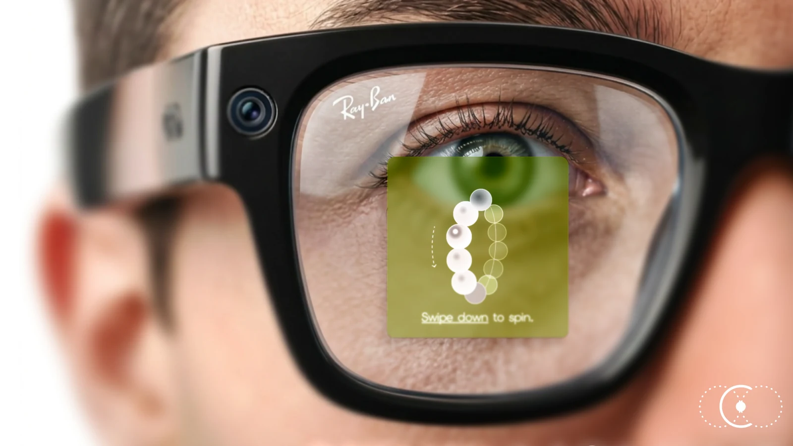
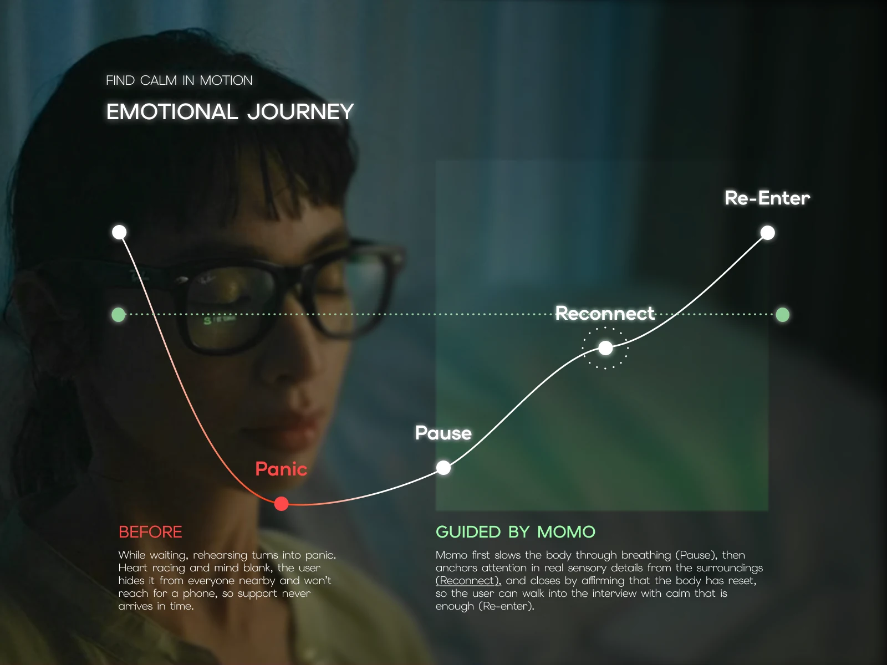
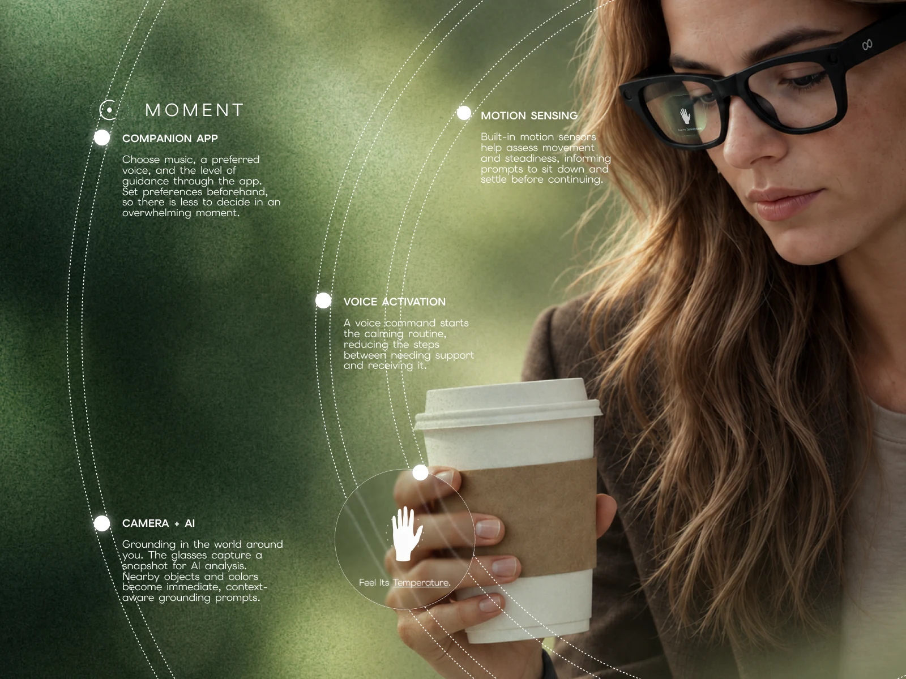
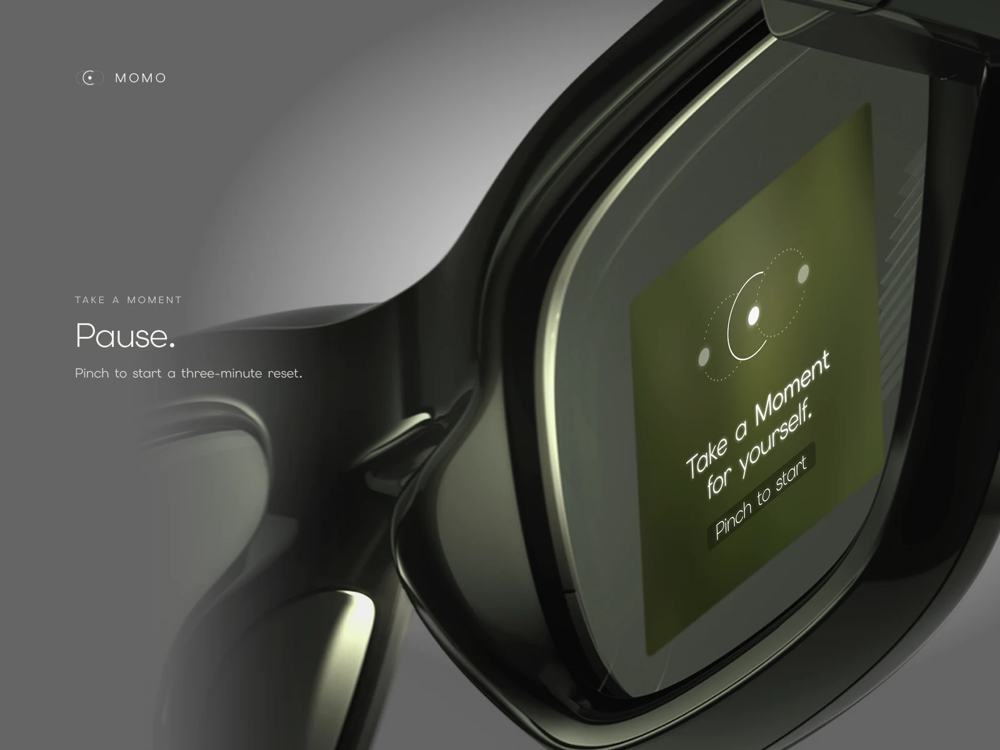
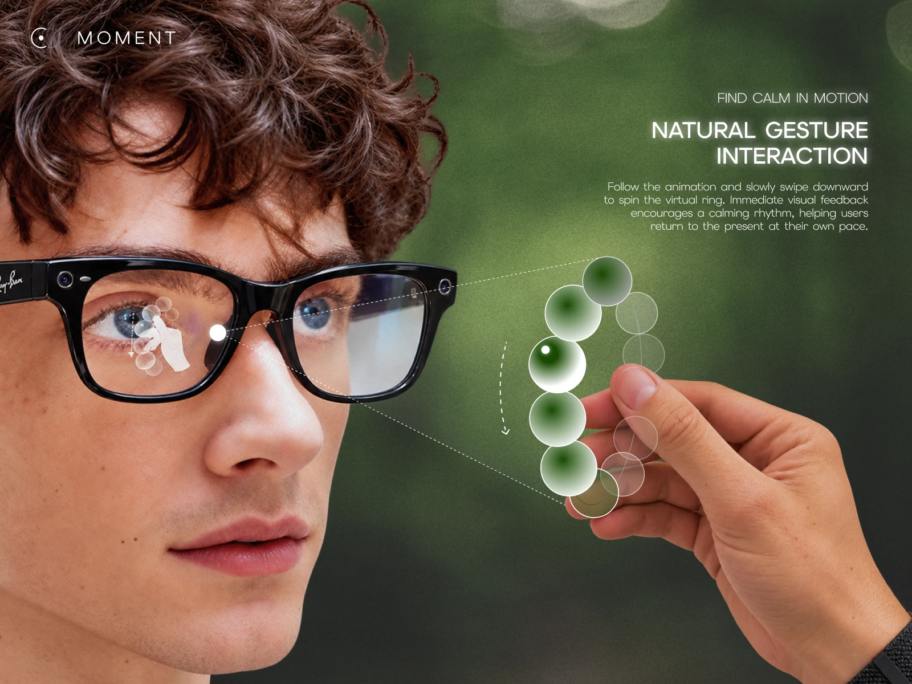
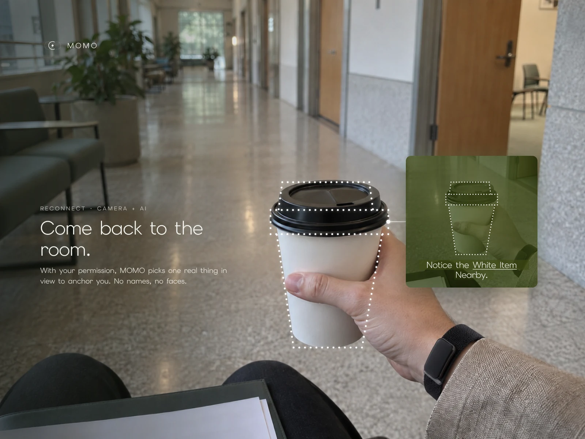
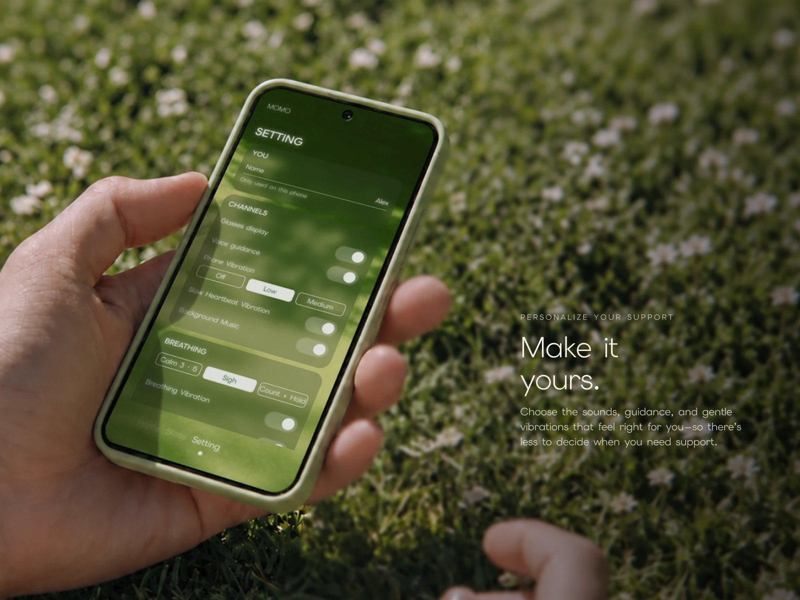

Outside, noise. Inside, one moment.
SCROLL
An emotional support assistant for smart glasses. When panic hits before an interview or an exam, MOMO guides graduating students through breathing and sensory grounding inside the lens, without taking out a phone.
- Event
- IX HACK 2026 · IDA entry
- Team
- Team 1
- Platform
- Meta Ray-Ban Display · Neural Band
- Category
- Wearables · Interaction design


My role
One of Team 1’s designers, working across the whole sprint: from the research behind the problem, to the gesture flow in the lens, to the IDA boards and the film.
- Research
- Interaction & UI design
- Visual boards
- Video & motion
The problem
Panic happens fast. Support should be faster.
Ten minutes before an interview, rehearsing turns into panic: heart racing, mind blank. Students hide it from everyone nearby, and won’t reach for a phone, so help never arrives in time. We asked how support could be easier to reach in exactly that moment.
Emotional journey
Pause, reconnect, re-enter.
Grounding brings attention back to the present. Moment walks through it one sensory step at a time, in an eight-step flow that follows the body back down from panic.

- 01
Pause
Slow the body first, with breathing paced by a ring in the lens.
- 02
Reconnect
Anchor attention in one real detail from the room around you.
- 03
Re-enter
Affirm that the body has reset, and walk in with calm that is enough.
How it works
Four quiet signals, one calm prompt.

- 01
Voice activation
One voice command starts the routine, so there are fewer steps between needing support and getting it.
- 02
Motion sensing
Built-in sensors read movement and steadiness, and prompt you to sit down before continuing.
- 03
Camera + AI
A snapshot of the world around you turns nearby objects and colours into grounding prompts.
- 04
Companion app
Set voice, music and guidance ahead of time, so there is less to decide in the moment.
Gesture interaction
A pinch to start, a swipe to breathe.
The Neural Band reads small finger gestures, so nobody nearby sees a thing. Pinch to start a three-minute reset; follow the animation and slowly swipe down to spin the ring. Immediate feedback sets a calming rhythm, at your own pace.


Reconnect
Come back to the room.
With your permission, MOMO picks one real thing in view to anchor you: “Notice the white item nearby.” No names, no faces, nothing stored about the people around you.

Make it yours
A calm only she can see.
A three-minute reset inside the lens: breathe, ground, then walk in as yourself. In the companion app, students choose the sounds, guidance and gentle vibrations that feel right, so there is less to decide when they need support.

Next project
Zen Bloom
View case study